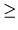

Suhan and Laina live in an n-dimensional city where there are n + 1 locations. Any two locations (consider these locations as points) are equidistant from each other and connected by only one bi-directional road. They love to roam together around the city on their favourite bi-verbal (A kind of vehicle). Kiri, a tenth generation robot also lives in the same city and wants to kill Suhan out of jealousy. That is why Suhan and Laina are very careful about keeping their thoughts and plans secret. Therefore nobody knows:
So their journey can start from any location, ends in another location and they may use any road sequence they like. Their destination location may be same or different than the source location. For example when their tour is guaranteed to be a simple cycle their source and destination location are same.
Given the number of locations in the city (L) you will have to find the expected cost (often considered as average) of one of their single travelling. You can assume that the cost of travelling from one location to another through the direct (also shortest) path is 1 universal joule.
The input file contains several lines of input. Each line contains a single integer L (15  L > 2) that indicates the number of locations in the city. Input is terminated by a line where value of L is zero. This line should not be processed.
For each line of input produce one line of output. This line contains three floating-point numbers F1, F2, F3. Here F1 is the expected cost when they travel along a path, F2 is the expected cost when it is guaranteed that they travel along a simple path and F3 is the expected cost when it is guaranteed that they travel along a simple cycle. All the floating point numbers should be rounded up to four digits after the decimal point. You must assume that their travelling cost is not greater than L. Travelling cost is always expressed in universal joule.
3 4 5 0
2.4286 1.5000 3.0000 3.5500 2.2000 3.5000 4.6716 3.0625 4.2000